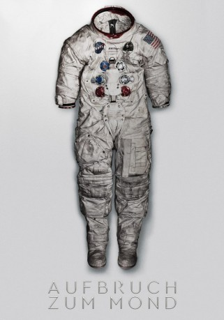

gesehen am 01.01.2019
gesehen am 01.01.2019Alternativ: First Man (Englischer Titel) gesehen am 01.01.2019
 
 IMDB-Wertung: 7.6 / 10
IMDB-Wertung: 7.6 / 10  Metascore:
Metascore: 
"Aufbruch zum Mond" erzählt aus Neil Armstrongs Leben und von den enormen Konflikten und Entbehrungen, mit denen der Pilot vor und während seiner legendären Mission konfrontiert war. Gleichzeitig schildert der Film auf ergreifende Weise die hochdramatischen Ereignisse des amerikanischen Raumfahrtprogramms zwischen 1961 und 1969.
Jahr: 2018
Dauer: 141 Minuten
FSK: 12
Land: USA Studio: Universal PicturesTonspuren: DD5.1 - ,
Untertitel: Deutsch,
Auflösung: 1080p (1920x1078) Größe: 6144 MB
Genre: Drama, Geschichte, Biographie
Regisseur: Damien Chazelle
Drehbuch: Josh Singer, James R. Hansen
Soundtrack: Justin Hurwitz
Darsteller:
 Ryan Gosling als Neil Armstrong
Ryan Gosling als Neil Armstrong Claire Foy als Janet Armstrong
Claire Foy als Janet Armstrong Jason Clarke als Ed White
Jason Clarke als Ed White Kyle Chandler als Deke Slayton
Kyle Chandler als Deke Slayton Corey Stoll als Buzz Aldrin
Corey Stoll als Buzz Aldrin Christopher Abbott als Dave Scott
Christopher Abbott als Dave Scott Ciarán Hinds als Bob Gilruth
Ciarán Hinds als Bob Gilruth Pablo Schreiber als Jim Lovell
Pablo Schreiber als Jim Lovell Shea Whigham als Gus Grissom
Shea Whigham als Gus Grissom Lukas Haas als Mike Collins
Lukas Haas als Mike Collins Ethan Embry als Pete Conrad
Ethan Embry als Pete Conrad Brian d'Arcy James als Joe Walker
Brian d'Arcy James als Joe Walker J.D. Evermore als Chris Kraft
J.D. Evermore als Chris Kraft Steve Coulter als Guenter Wendt
Steve Coulter als Guenter Wendt Matthew Glave als Chuck Yeager
Matthew Glave als Chuck Yeager Robert Hatch als Joe Schmitt
Robert Hatch als Joe SchmittDatei: X:\2018(A-F)\Aufbruch zum Mond (2018, FSK12, 1920x1078).mkv seit 16.12.2018
Festplatte: HD 2017(A-Z)-2018(A-F)
 Es gibt insgesamt 151 Filme in der Gruppe '2018(A-F)'
Es gibt insgesamt 151 Filme in der Gruppe '2018(A-F)'